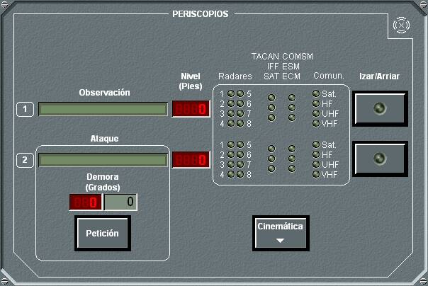

Este panel de detalle de los periscopios, pueden realizarse las siguientes acciones con el Periscopio de Observación y Periscopio de Ataque:
- Pulsando el botón Izar / Arriar se inicia una maniobra de cambio de estado del periscopio (izado o arriado), siempre que la profundidad de la unidad sea inferior al Nivel Periscopio. Mientras dura la maniobra de izado / arriado, el led permanece encendido amarillo, y una vez que está completamente izada estará encendido verde.
- Para el Periscopio de Ataque, se puede solicitar la Orientación del mismo. Se considera que el sector de detección del periscopio de ataque está centrado en la orientación establecida.
Además para cada periscopio se muestra la siguiente información:
- Nivel: Indica la cota periscópica. Cuando es izado o arriado, en este campo se muestra una cuenta atrás desde la cota periscópica hasta cero.
- Se muestra también indicadores de qué equipos tienen su antena lista para operar, según el estado del periscopio, y en función de la asignación de equipos a periscopios de la unidad (ver Manual de Preparación – Preparación de Unidades). Los leds se encenderán en amarillo mientras el periscopio correspondiente esté izándose o arriándose, y en verde cuando se encuentra completamente izado.
Si un periscopio se encuentra izándose o arriándose (led amarillo) y se pulsa de nuevo el botón Izar / Arriar, se invertirá la dirección del movimiento desde la altura en la que se encuentre.
Si encontrándose el periscopio izado el submarino se sumerge a profundidad superior al Nivel Periscopio, el periscopio es arriado automáticamente.
Si el equipo está dañado, no se podrá realizar ninguna operación sobre él.